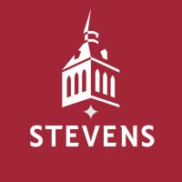

I am a software engineer and applied AI researcher at UNC Charlotte, where I am completing a B.S. in Computer Science in May 2027 while continuing in the M.S. in Artificial Intelligence Early Entry program. My work sits between software systems and research: I build tools people can actually use, then study the technical choices and tradeoffs underneath them.
Recent work includes a self-hosted collaborative coding environment used across 20+ lab sessions, an Apple Vision Pro accessibility prototype using on-device object tracking and spatial audio, a human-in-the-loop document review system built with Amazon Bedrock and XGBoost, and research infrastructure for screening and classifying hundreds of scientific papers.
I am especially interested in local-first and on-device computing, computer vision, spatial interfaces, developer tools, and AI used for narrow tasks where it adds real value. I like systems that leave important judgment and creative work with people, and I am seeking full-time software engineering and applied AI roles beginning May 2027.
Experience

Research Intern
Stevens Institute of Technology, Dr. Jina Huh-Yoo
Built rq-system, a two-phase automated literature pipeline using the PubMed E-utilities, CrossRef, and Perplexity API, processing 345+ papers with a 74.4% inclusion rate across deterministic filtering, AI gating, and structured extraction, and synthesized the findings into structured research questions on mental health and social media data sharing for a funded multi-site consortium.
Lead Instructional Assistant, ITSC 1213
UNC Charlotte College of Computing and Informatics
Lead TA for an asynchronous, fully online Python course, overseeing grading workflows and rubric development across all sections and coordinating a team of TAs to keep feedback consistent. Hold regular office hours to help students work through programming assignments, debug logic errors, and build stronger fundamentals, while working directly with the instructor on assignment design and course policy.
Instructional Assistant, ITSC 3160
UNC Charlotte College of Computing and Informatics
Support a database design course by holding office hours and monitoring course platforms, proactively tracking student progress and reaching out to students who fall behind. Provide targeted help on relational modeling, normalization, and SQL assignments, and assist the instructor with grading and clarifying project requirements.
Instructional Assistant, ITSC 1212
UNC Charlotte College of Computing and Informatics
Led weekly lab sections for an introductory programming course, walking students through core computer science concepts such as control flow, data structures, and functions. Helped students debug their own code, reinforced lecture material with hands-on practice, and graded lab work with feedback aimed at building lasting fundamentals.
Peer Mentor
UNC Charlotte College of Computing and Informatics
Supported first-year students with academic engagement and personal growth through check-ins, group discussions, and events, guiding their performance by promoting effective study habits and campus resources.
Undergraduate Researcher
UNC Charlotte College of Computing and Informatics
Focused on AR/VR accessibility research developing spatial audio-augmented computer vision solutions for visually impaired users. Built Swift-based prototypes using Apple Vision Pro integrating spatial audio cues with machine learning for object identification, targeting 85% accuracy and 30% improved navigation efficiency.
Formal Committee Head
Alpha Omega Epsilon, Beta Kappa Chapter
Coordinated all planning, logistics, and communication for formal events to ensure smooth execution aligned with executive board expectations.